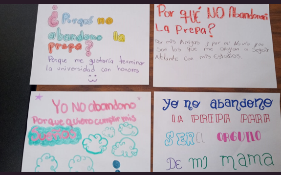
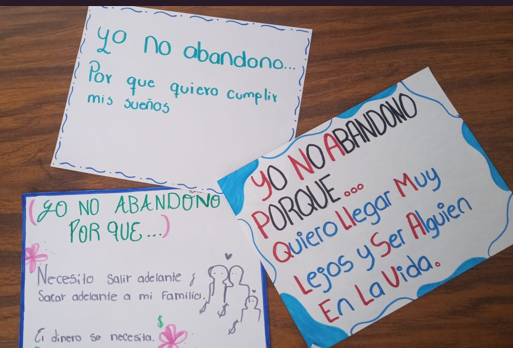
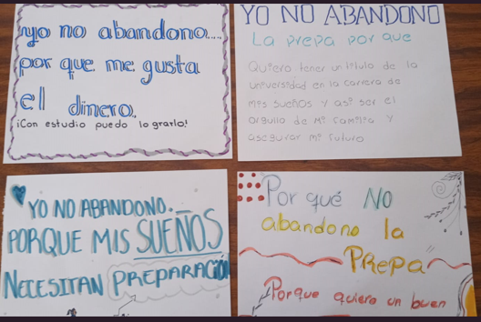

Te extrañamos en el salón
2025-2
Material de apoyo
La campaña Te extrañamos en el salón 2025-2 da seguimiento y continuidad al esfuerzo realizado durante la campaña 2025-1 realizada en febrero. Entre las medidas y acciones que se realizan para evitar el abandono e impulsar el retorno, se encuentran la extensión de fechas de inscripción y reinscripción, así como atención a las causas, bajo el entendido de que en el fenómeno de abandono pueden intervenir más de una causa y estas no necesariamente son independientes.
Asimismo, esta estrategia es parte del plan integral de la Subsecretaría de Educación Media Superior de fortalecimiento de la planta docente, del Marco Curricular Común de la Nueva Escuela Mexicana, y de buscar la integración de la comunidad escolar a través de campañas como la Campaña Nacional Cultura de Paz, la Escuela es Nuestra y Vive saludable, Vive feliz.
Causas de abandono

Material de apoyo

Galería


